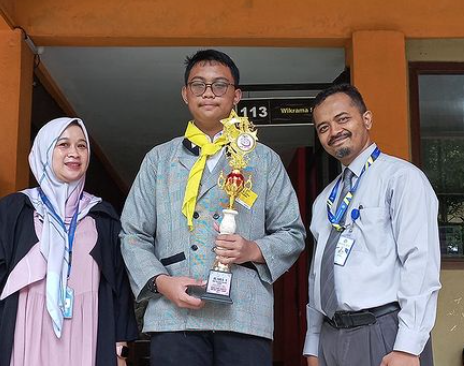

Juara 3 Lomba Karya Tulis Ilmiah
"Peran & Tugas Palang Merah Indonesia"
Diraih oleh siswa kelas XII, Putri Ramadani, dalam ajang Lomba Karya Tulis Ilmiah dalam rangka HUT PMI ke-77.
Tanggal: 17 September 2022
Lihat Sertifikat
Juara 3 Futsal
Tim futsal dari SMK Wikrama Bogor berhasil mendapatkan juara 3 di lomba Futsal LIga Pelajar Bogor Timur dan salah satu nya adalah Aditya Faisal Akbar.

Menjadi Petugas Upacara 17 Agustus 2024
Naufal Daffa Musyava menjadi salah satu petugas upacara 17 Agustus 2024.
Tanggal: 17 Agustus 2024

Juara 1 Lomba Pertolongan Pertama Lapangan
Diraih oleh siswa kelas XI, Rafid Dwi Prakoso, dalam ajang Lomba Pertolongan Pertama Lapangan untuk SMA/SMK se-Bogor Raya dan Depok.
Tanggal: 29 Oktober 2023